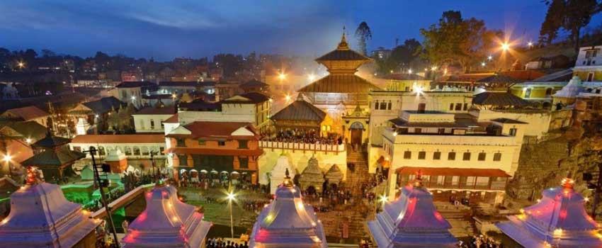
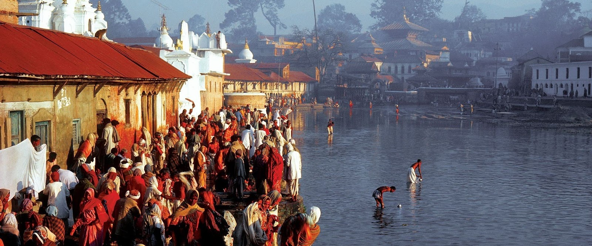

Shree Krishna Janmashtami, more simply referred to as Janmashtami, is a Hindu holiday taking place every year in the month of Bhadrapada. On the Gregorian Calendar, it falls sometime in August or September. The holiday is very popular in Nepal and throughout the Hindu world. It is meant to commemorate the 8th birth, or “avatar,” of the god Krishna. It is celebrated as a general triumph of good over evil. Hindu epic tales tell of Krishna’s battles with evil beings and his ultimate victory over the forces of darkness. To mark the day, there will be performances at midnight that look back to the epic battle of Krishna against the evil King Kansa, when it was also very dark and windy. Many devotees will fast, worship Krishna, and offer such things as milk and cheese curds to him since he is thought to particularly enjoy dairy products. Janmashtami celebrations include traditional singing and dancing, reenactments of the “life cycle of Krishna,” visits to festively decorated Hindu temples, and exchanging of gifts. Some temples are lit up as the crowds gather in the night to offer flowers, food, and candy to a Krishna idol. Those who cannot attend temple, however, still celebrate with miniature Krishna idols that are arranged inside beautifully decorated cradles.